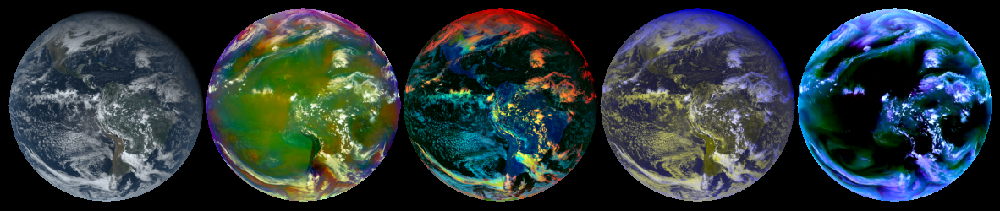

Reference Guide¶
Retrieve Data¶
Download and read data from the R-series Geostationary Operational Environmental Satellite data.
Data is downloaded from Amazon Web Services and can be returned as a file list or read as an xarray.Dataset. If the data is not available in a local directory, it is loaded directly into memory.
https://registry.opendata.aws/noaa-goes/
Functions:
|
Get the latest available GOES data. |
|
Get the latest available GOES data. |
|
Get GOES data for a time range. |
- goes2go.data.goes_latest(*, satellite='noaa-goes16', product='ABI-L2-MCMIP', domain='C', return_as='xarray', download=True, overwrite=False, save_dir=PosixPath('/p/cwfs/blaylock/data'), s3_refresh=True, verbose=True)¶
Get the latest available GOES data.
- Parameters
satellite ({'goes16', 'goes17'}) –
Specify which GOES satellite. The following alias may also be used:
'goes16': 16, ‘G16’, or ‘EAST’'goes17': 17, ‘G17’, or ‘WEST’
product ({'ABI', 'GLM', other GOES product}) –
Specify the product name.
’ABI’ is an alias for ABI-L2-MCMIP Multichannel Cloud and Moisture Imagery
’GLM’ is an alias for GLM-L2-LCFA Geostationary Lightning Mapper
Others may include
'ABI-L1b-Rad','ABI-L2-DMW', etc. For more available products, look at this READMEdomain ({'C', 'F', 'M'}) –
ABI scan region indicator. Only required for ABI products if the given product does not end with C, F, or M.
C: Contiguous United States (alias ‘CONUS’)
F: Full Disk (alias ‘FULL’)
M: Mesoscale (alias ‘MESOSCALE’)
return_as ({'xarray', 'filelist'}) – Return the data as an xarray.Dataset or as a list of files
download (bool) –
True: Download the data to disk to the location set by save_dir
False: Just load the data into memory.
save_dir (pathlib.Path or str) – Path to save the data.
overwrite (bool) –
True: Download the file even if it exists.
False Do not download the file if it already exists
s3_refresh (bool) – Refresh the s3fs.S3FileSystem object when files are listed.
- goes2go.data.goes_nearesttime(attime, within=pandas.to_timedelta, *, satellite='noaa-goes16', product='ABI-L2-MCMIP', domain='C', return_as='xarray', download=True, overwrite=False, save_dir=PosixPath('/p/cwfs/blaylock/data'), s3_refresh=True, verbose=True)¶
Get the latest available GOES data.
- Parameters
attime (datetime) – Time to find the nearest observation for. May also use a pandas-interpretable datetime string.
within (timedelta or pandas-parsable timedelta str) – Timerange tht the nearest observation must be.
satellite ({'goes16', 'goes17'}) –
Specify which GOES satellite. The following alias may also be used:
'goes16': 16, ‘G16’, or ‘EAST’'goes17': 17, ‘G17’, or ‘WEST’
product ({'ABI', 'GLM', other GOES product}) –
Specify the product name.
’ABI’ is an alias for ABI-L2-MCMIP Multichannel Cloud and Moisture Imagery
’GLM’ is an alias for GLM-L2-LCFA Geostationary Lightning Mapper
Others may include
'ABI-L1b-Rad','ABI-L2-DMW', etc. For more available products, look at this READMEdomain ({'C', 'F', 'M'}) –
ABI scan region indicator. Only required for ABI products if the given product does not end with C, F, or M.
C: Contiguous United States (alias ‘CONUS’)
F: Full Disk (alias ‘FULL’)
M: Mesoscale (alias ‘MESOSCALE’)
return_as ({'xarray', 'filelist'}) – Return the data as an xarray.Dataset or as a list of files
download (bool) –
True: Download the data to disk to the location set by save_dir
False: Just load the data into memory.
save_dir (pathlib.Path or str) – Path to save the data.
overwrite (bool) –
True: Download the file even if it exists.
False: Do not download the file if it already exists
s3_refresh (bool) – Refresh the s3fs.S3FileSystem object when files are listed.
- goes2go.data.goes_timerange(start=None, end=None, recent=None, *, satellite='noaa-goes16', product='ABI-L2-MCMIP', domain='C', return_as='filelist', download=True, overwrite=False, save_dir=PosixPath('/p/cwfs/blaylock/data'), max_cpus=1, s3_refresh=False, verbose=True)¶
Get GOES data for a time range.
- Parameters
start (datetime) – Required if recent is None.
end (datetime) – Required if recent is None.
recent (timedelta or pandas-parsable timedelta str) – Required if start and end are None. If timedelta(hours=1), will get the most recent files for the past hour.
satellite ({'goes16', 'goes17'}) –
Specify which GOES satellite. The following alias may also be used:
'goes16': 16, ‘G16’, or ‘EAST’'goes17': 17, ‘G17’, or ‘WEST’
product ({'ABI', 'GLM', other GOES product}) –
Specify the product name.
’ABI’ is an alias for ABI-L2-MCMIP Multichannel Cloud and Moisture Imagery
’GLM’ is an alias for GLM-L2-LCFA Geostationary Lightning Mapper
Others may include
'ABI-L1b-Rad','ABI-L2-DMW', etc. For more available products, look at this READMEdomain ({'C', 'F', 'M'}) –
ABI scan region indicator. Only required for ABI products if the given product does not end with C, F, or M.
C: Contiguous United States (alias ‘CONUS’)
F: Full Disk (alias ‘FULL’)
M: Mesoscale (alias ‘MESOSCALE’)
return_as ({'xarray', 'filelist'}) – Return the data as an xarray.Dataset or as a list of files
download (bool) –
True: Download the data to disk to the location set by save_dir
False: Just load the data into memory.
save_dir (pathlib.Path or str) – Path to save the data.
overwrite (bool) –
True: Download the file even if it exists.
False Do not download the file if it already exists
max_cpus (int) –
s3_refresh (bool) – Refresh the s3fs.S3FileSystem object when files are listed.
RGB Recipes¶
These functions take GOES-East or GOES-West multichannel data on a
fixed grid (files named ABI-L2-MCMIPC) and generates a 3D
Red-Green-Blue (RGB) array for various GOES RGB products.
RGB recipes are based on the GOES Quick Guides and include the following:
NaturalColor
TrueColor
FireTemperature
AirMass
DayCloudPhase
DayConvection
DayCloudConvection
DayLandCloud
DayLandCloudFire
WaterVapor
DifferentialWaterVapor
DaySnowFog
NighttimeMicrophysics
Dust
SulfurDioxide
Ash
SplitWindowDifference
NightFogDifference
RocketPlume ✨New - July 9, 2021
The returned RGB can easily be viewed with plt.imshow(RGB).
For imshow to show an RGB image, the values must range between 0 and 1. Values are normalized between the range specified in the Quick Guides. This normalization is synonymous to contrast or histogram stretching (more info here) and follows the formula:
NormalizedValue = (OriginalValue-LowerLimit)/(UpperLimit-LowerLimit)
Gamma correction darkens or lightens an image (more info) and follows the decoding formula:
R_corrected = R**(1/gamma)
The input for all these functions are denoted by C for “channels” which
represents the GOES ABI multichannel file opened with xarray. For example:
FILE = 'OR_ABI-L2-MCMIPC-M6_G17_s20192201631196_e20192201633575_c20192201634109.nc' C = xarray.open_dataset(FILE)
All RGB products are demonstarted in the make_RGB_Demo notebook.
Note: I don’t have a GeoColor RGB, because it is much more involved than simply stacking RGB channels. If anyone does do something similar to a GeoColor image, let me know!
ABI Band Reference¶
https://www.weather.gov/media/crp/GOES_16_Guides_FINALBIS.pdf http://cimss.ssec.wisc.edu/goes/GOESR_QuickGuides.html https://www.goes-r.gov/mission/ABI-bands-quick-info.html
ABI Band Number |
Central Wavelength |
Name |
Type |
|---|---|---|---|
1 |
0.47 μm |
“Blue” Band |
Visible |
2 |
0.64 μm |
“Red” Band |
Visible |
3 |
0.86 μm |
“Veggie” Band |
Near-IR |
4 |
1.37 μm |
“Cirrus” Band |
Near-IR |
5 |
1.6 μm |
“Snow/Ice” Band |
Near-IR |
6 |
2.2 μm |
“Cloud Particle Size” Band |
Near-IR |
7 |
3.9 μm |
“Shortwave Window” Band |
IR (with reflected daytime component) |
8 |
6.2 μm |
“Upper-Level Tropospheric Water Vapor” Band |
IR |
9 |
6.9 μm |
“Mid-Level Tropospheric Water Vapor” Band |
IR |
10 |
7.3 μm |
“Lower-level Water Vapor” Band |
IR |
11 |
8.4 μm |
“Cloud-Top Phase” Band |
IR |
12 |
9.6 μm |
“Ozone Band” |
IR |
13 |
10.3 μm |
“Clean” IR Longwave Window Band |
IR |
14 |
11.2 μm |
IR Longwave Window Band |
IR |
15 |
12.3 μm |
“Dirty” Longwave Window Band |
IR |
16 |
13.3 μm |
“CO2” Longwave infrared |
IR |
Functions:
|
Air Mass RGB: (See Quick Guide for reference) |
|
Ash RGB: (See Quick Guide for reference) |
|
Day Cloud Convection RGB: (See Quick Guide for reference) |
|
Day Cloud Phase Distinction RGB: (See Quick Guide for reference) |
|
Day Convection RGB: (See Quick Guide for reference) |
|
Day Land Cloud Fire RGB: (See Quick Guide for reference) |
|
Day Land Cloud Fire RGB: (See Quick Guide for reference) |
|
Day Snow-Fog RGB: (See Quick Guide for reference) |
|
Differential Water Vapor RGB: (See Quick Guide for reference) |
|
SulfurDioxide RGB: (See Quick Guide for reference) |
|
Fire Temperature RGB: (See Quick Guide for reference) |
|
Natural Color RGB based on CIMSS method. |
|
Night Fog Difference RGB (greyscale): (See Quick Guide for reference) |
|
Nighttime Microphysics RGB: (See Quick Guide for reference) |
|
Normalized Burn Ratio |
|
Rocket Plume RGB |
|
Split Window Difference RGB (greyscale): (See Quick Guide for reference) |
|
SulfurDioxide RGB: (See Quick Guide for reference) |
|
True Color RGB: (See Quick Guide for reference) |
|
Simple Water Vapor RGB: (See Quick Guide for reference) |
|
Darken or lighten an image with gamma correction. |
Help determine the |
|
|
Return the R, G, and B arrays for the three channels requested. |
|
Normalize values between 0 and 1. |
|
Assemble a dataset with the RGB array with other data from the file. |
- goes2go.rgb.AirMass(C, **kwargs)¶
Air Mass RGB: (See Quick Guide for reference)

- Parameters
C (xarray.Dataset) – A GOES ABI multichannel file opened with xarray.
**kwargs – Keyword arguments for
rgb_as_datasetfunction. - latlon : derive latitude and longitude of each pixel
- goes2go.rgb.Ash(C, **kwargs)¶
Ash RGB: (See Quick Guide for reference)

- Parameters
C (xarray.Dataset) – A GOES ABI multichannel file opened with xarray.
**kwargs – Keyword arguments for
rgb_as_datasetfunction. - latlon : derive latitude and longitude of each pixel
- goes2go.rgb.DayCloudConvection(C, **kwargs)¶
Day Cloud Convection RGB: (See Quick Guide for reference)

- Parameters
C (xarray.Dataset) – A GOES ABI multichannel file opened with xarray.
**kwargs – Keyword arguments for
rgb_as_datasetfunction. - latlon : derive latitude and longitude of each pixel
- goes2go.rgb.DayCloudPhase(C, **kwargs)¶
Day Cloud Phase Distinction RGB: (See Quick Guide for reference)

- Parameters
C (xarray.Dataset) – A GOES ABI multichannel file opened with xarray.
**kwargs – Keyword arguments for
rgb_as_datasetfunction. - latlon : derive latitude and longitude of each pixel
- goes2go.rgb.DayConvection(C, **kwargs)¶
Day Convection RGB: (See Quick Guide for reference)

- Parameters
C (xarray.Dataset) – A GOES ABI multichannel file opened with xarray.
**kwargs – Keyword arguments for
rgb_as_datasetfunction. - latlon : derive latitude and longitude of each pixel
- goes2go.rgb.DayLandCloud(C, **kwargs)¶
Day Land Cloud Fire RGB: (See Quick Guide for reference)

- Parameters
C (xarray.Dataset) – A GOES ABI multichannel file opened with xarray.
**kwargs – Keyword arguments for
rgb_as_datasetfunction. - latlon : derive latitude and longitude of each pixel
- goes2go.rgb.DayLandCloudFire(C, **kwargs)¶
Day Land Cloud Fire RGB: (See Quick Guide for reference)

- Parameters
C (xarray.Dataset) – A GOES ABI multichannel file opened with xarray.
**kwargs – Keyword arguments for
rgb_as_datasetfunction. - latlon : derive latitude and longitude of each pixel
- goes2go.rgb.DaySnowFog(C, **kwargs)¶
Day Snow-Fog RGB: (See Quick Guide for reference)

- Parameters
C (xarray.Dataset) – A GOES ABI multichannel file opened with xarray.
**kwargs – Keyword arguments for
rgb_as_datasetfunction. - latlon : derive latitude and longitude of each pixel
- goes2go.rgb.DifferentialWaterVapor(C, **kwargs)¶
Differential Water Vapor RGB: (See Quick Guide for reference)

- Parameters
C (xarray.Dataset) – A GOES ABI multichannel file opened with xarray.
**kwargs – Keyword arguments for
rgb_as_datasetfunction. - latlon : derive latitude and longitude of each pixel
- goes2go.rgb.Dust(C, **kwargs)¶
SulfurDioxide RGB: (See Quick Guide for reference)

- Parameters
C (xarray.Dataset) – A GOES ABI multichannel file opened with xarray.
**kwargs – Keyword arguments for
rgb_as_datasetfunction. - latlon : derive latitude and longitude of each pixel
- goes2go.rgb.FireTemperature(C, **kwargs)¶
Fire Temperature RGB: (See Quick Guide for reference)

- Parameters
C (xarray.Dataset) – A GOES ABI multichannel file opened with xarray.
**kwargs – Keyword arguments for
rgb_as_datasetfunction. - latlon : derive latitude and longitude of each pixel
- goes2go.rgb.NaturalColor(C, gamma=0.8, pseudoGreen=True, night_IR=False, **kwargs)¶
Natural Color RGB based on CIMSS method. Thanks Rick Kohrs! (See Quick Guide for reference)
Check out Rick Kohrs merged GOES images.
This NaturalColor RGB is very similar to the TrueColor RGB but uses slightly different contrast stretches and ranges.
For more details on combing RGB and making the psedo green channel, refer to Bah et al. 2018.


- Parameters
C (xarray.Dataset) – A GOES ABI multichannel file opened ith xarray.
gamma (float) –
Darken or lighten an image with gamma correction. Values > 1 will lighten an image. Values < 1 will darken an image.
night_IR (bool) – If True, use Clean IR (channel 13) as maximum RGB value overlay so that cold clouds show up at night. (Be aware that some daytime clouds might appear brighter).
**kwargs – Keyword arguments for
rgb_as_datasetfunction. - latlon : derive latitude and longitude of each pixel
- goes2go.rgb.NightFogDifference(C, **kwargs)¶
Night Fog Difference RGB (greyscale): (See Quick Guide for reference)

- Parameters
C (xarray.Dataset) – A GOES ABI multichannel file opened with xarray.
**kwargs – Keyword arguments for
rgb_as_datasetfunction. - latlon : derive latitude and longitude of each pixel
- goes2go.rgb.NighttimeMicrophysics(C, **kwargs)¶
Nighttime Microphysics RGB: (See Quick Guide for reference)

- Parameters
C (xarray.Dataset) – A GOES ABI multichannel file opened with xarray.
**kwargs – Keyword arguments for
rgb_as_datasetfunction. - latlon : derive latitude and longitude of each pixel
- goes2go.rgb.NormalizedBurnRatio(C, **kwargs)¶
Normalized Burn Ratio
THIS FUNCTION IS NOT FULLY DEVELOPED. Need more info.
NBR= (0.86 µm – 2.2 µm)/(0.86 um + 2.2 um)
- goes2go.rgb.RocketPlume(C, night=False, **kwargs)¶
Rocket Plume RGB
For identifying rocket launches.
See this blog and the Quick Guide for reference

- Parameters
C (xarray.Dataset) – A GOES ABI multichannel file opened with xarray.
night (bool) – If the area is in night, turn this on to use a different channel than the daytime application.
**kwargs – Keyword arguments for
rgb_as_datasetfunction. - latlon : derive latitude and longitude of each pixel
- goes2go.rgb.SplitWindowDifference(C, **kwargs)¶
Split Window Difference RGB (greyscale): (See Quick Guide for reference)

- Parameters
C (xarray.Dataset) – A GOES ABI multichannel file opened with xarray.
**kwargs – Keyword arguments for
rgb_as_datasetfunction. - latlon : derive latitude and longitude of each pixel
- goes2go.rgb.SulfurDioxide(C, **kwargs)¶
SulfurDioxide RGB: (See Quick Guide for reference)

- Parameters
C (xarray.Dataset) – A GOES ABI multichannel file opened with xarray.
**kwargs – Keyword arguments for
rgb_as_datasetfunction. - latlon : derive latitude and longitude of each pixel
- goes2go.rgb.TrueColor(C, gamma=2.2, pseudoGreen=True, night_IR=True, **kwargs)¶
True Color RGB: (See Quick Guide for reference)
This is similar to the NaturalColor RGB, but uses a different gamma correction and does not apply contrast stretching. I think these images look a little “washed out” when compared to the NaturalColor RGB. So, I would recommend using the NaturalColor RGB.
For more details on combing RGB and making the psedo green channel, refer to Bah et al. 2018.


- Parameters
C (xarray.Dataset) – A GOES ABI multichannel file opened with xarray.
gamma (float) –
Darken or lighten an image with gamma correction. Values > 1 will lighten an image. Values < 1 will darken an image.
pseudoGreen (bool) – True: returns the calculated “True” green color False: returns the “veggie” channel
night_IR (bool) – If True, use Clean IR (channel 13) as maximum RGB value overlay so that cold clouds show up at night. (Be aware that some daytime clouds might appear brighter).
**kwargs – Keyword arguments for
rgb_as_datasetfunction. - latlon : derive latitude and longitude of each pixel
- goes2go.rgb.WaterVapor(C, **kwargs)¶
Simple Water Vapor RGB: (See Quick Guide for reference)

- Parameters
C (xarray.Dataset) – A GOES ABI multichannel file opened with xarray.
**kwargs – Keyword arguments for
rgb_as_datasetfunction. - latlon : derive latitude and longitude of each pixel
- goes2go.rgb.gamma_correction(a, gamma, verbose=False)¶
Darken or lighten an image with gamma correction.
- Parameters
a (array-like) – An array of values, typically the RGB array of values in an image.
gamma (float) – Gamma value to decode the image by. Values > 1 will lighten an image. Values < 1 will darken an image.
- goes2go.rgb.get_imshow_kwargs(ds)¶
Help determine the
plt.imshowarguments.- Parameters
ds (xarray.Dataset) –
- Returns
- Return type
kwargs for the
plt.imshowwith the correct image extent limits.
Examples
r = TrueColor(G) ax = common_features(r.crs) ax.imshow(r.TrueColor, *\*\get_imshow_kwargs(r))
- goes2go.rgb.load_RGB_channels(C, channels)¶
Return the R, G, and B arrays for the three channels requested. This function will convert the data any units in Kelvin to Celsius.
- Parameters
C (xarray.Dataset) – The GOES multi-channel file opened with xarray.
channels (tuple of size 3) – A tuple of the channel number for each (R, G, B). For example
channel=(2, 3, 1)is for the true color RGB
- Returns
A list with three items that are used for R, G, and B.
>>> R, G, B = load_RGB_channels(C, (2,3,1))
- goes2go.rgb.normalize(value, lower_limit, upper_limit, clip=True)¶
Normalize values between 0 and 1.
Normalize between a lower and upper limit. In other words, it converts your number to a value in the range between 0 and 1. Follows normalization formula
This is the same concept as contrast or histogram stretching
NormalizedValue = (OriginalValue-LowerLimit)/(UpperLimit-LowerLimit)
- Parameters
value – The original value. A single value, vector, or array.
upper_limit – The upper limit.
lower_limit – The lower limit.
clip (bool) –
True: Clips values between 0 and 1 for RGB.
False: Retain the numbers that extends outside 0-1 range.
Output – Values normalized between the upper and lower limit.
- goes2go.rgb.rgb_as_dataset(G, RGB, description, latlon=False)¶
Assemble a dataset with the RGB array with other data from the file.
- Parameters
G (xarray.Dataset) – GOES ABI data from multispectral channel
RGB (array) – A 3D array of R, G, and B values at each pixel
description (str) – A description of what the RGB data represents.
latlon (bool) – Derive the latitude and longitude of each pixel.
Other Tools¶
Other tools for handeling NOAA GOES data files.
Functions:
|
Get coordinate reference system for the Advanced Baseline Imager (ABI). |
|
Create a field-of-view polygon for the GOES data. |
|
Not too useful, because it’s just lat/lon coordinates |
- goes2go.tools.abi_crs(G, reference_variable='CMI_C01')¶
Get coordinate reference system for the Advanced Baseline Imager (ABI).
- Parameters
G (xarray.Dataset) – An xarray.Dataset to derive the coordinate reference system.
reference_variable (str) – A variable in the xarray.Dataset to use to parse projection from.
- Returns
cartopy coordinate reference system
data projection coordinates in x direction
data projection coordinates in y direction
- Return type
Three objects are returned
- goes2go.tools.field_of_view(G, resolution=60, reduce_abi_fov=0.06)¶
Create a field-of-view polygon for the GOES data.
Based on information from the GOES-R Series Data Book.
GLM lense field of view is 16 degree, or +/- 8 degrees (see page 225) ABI full-disk field of view if 17.4 degrees (see page 48)
To plot the field of view on the cartopy axes, do the following:
FOV, geo = field_of_view(G) ax = plt.subplot(projection=geo) ax.add_geometries([FOV], crs=geo)
- Parameters
G (xarray.Dataset) – The GOES NetCDF file opened with xarray. A file is required because we get info from the file to define the projection.
resolution (int) – Resolution of polygon shapes
reduce_abi_fov (float or int) – Since the globe isn’t a perfect ellipse, reduce the field of view just slightly to get all the points to be on the projection plane. If this number is less than the default, the polygon will not be calculated correctly because edge points will lie off the projection globe.
- goes2go.tools.glm_crs(G, reference_variable='flash_lat')¶
Not too useful, because it’s just lat/lon coordinates